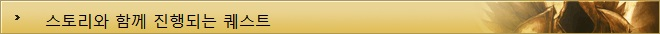

디아블로3 가이드
| 기초정보 | 인터페이스 | 단축키 | 퀘스트 |
|---|---|---|---|
| 제작 | 대장장이 | 보석공 | 점술가 |
| 기타 | 직업선택 | 지도 | |

디아블로3의 퀘스트는 단순히 레벨업을 위한 경험치를 획득하거나 좋은 아이템을 얻기 위한 목적만이 아니다.
대부분의 퀘스트는 스토리가 전개되면서 관련된 이야기를 풀어가는 형식이기 때문에
좀 더 게임에 몰입하게 해주는 요소이기도 하며, 디아블로3의 진정한 재미를 느끼기 위해선
NPC들의 대화 하나하나 놓치지 않는 자세가 필요하다.
보통 퀘스트는 NPC의 머리 위에 '!' 로 시작되며, 특정 물건을 통해서나 지역에서 받을 수 있는 퀘스트도 존재한다.
하지만 게임을 진행하는데 필수적으로 수행해야 할 퀘스트는 처음부터 마지막까지 대부분 이어져서 순차적으로 진행되기 때문에 큰 어려움은 없다.
또한 퀘스트를 주는 NPC의 대사내용에서 힌트를 얻을 수도 있는 만큼 좀 더 원활한 진행을 위해서 참고하면 좋은 부분이다.
TOP